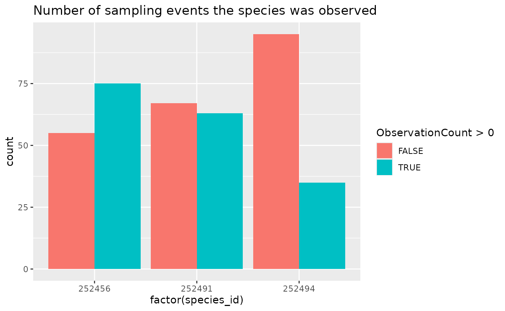

After downloading population data, many analyses require that you
have records not only of when/where species were detected, but
also where they were not detected. While NatureCounts generally
contains records of species presence, we can infer species absence when
a species was not detected in a Sampling Event (unique
SamplingEventIdentifier), provided that all species were
reported for that Sampling Event (i.e. that
AllSpeciesReported is “Yes”).
To make things simpler, we have included the
format_zero_fill() function.
The following examples use the “testuser” user which is not available to you. You can quickly sign up for a free account of your own to access and play around with these examples. Simply replace
testuserwith your own username.
Setup
Download data
We’ll use the ‘core’ version of BMDE fields so that we include
CommonName for convenience.
rc <- nc_data_dl(collections = "RCBIOTABASE", fields_set = "core",
species = c(252456, 252494, 252491),
username = "testuser", info = "nc_vignette")## Using filters: collections (RCBIOTABASE); species (252456, 252494, 252491); fields_set (BMDE2.00)## Collecting available records...## collection nrecords
## 1 RCBIOTABASE 349
## Total records: 349##
## Downloading records for each collection:## RCBIOTABASE## Records 1 to 349 / 349Initial Exploration
Let’s take a look at the butterfly species observations we have
count(rc, CommonName)## CommonName n
## 1 Black Swallowtail 40
## 2 Monarch 215
## 3 Red Admiral 94How many sampling events?
count(rc, SamplingEventIdentifier)## SamplingEventIdentifier n
## 1 RCBIOTABASE-10008-1 1
## 2 RCBIOTABASE-10015-1 1
## 3 RCBIOTABASE-10030-1 1
## 4 RCBIOTABASE-10068-1 1
## 5 RCBIOTABASE-10070-1 1
## 6 RCBIOTABASE-10087-1 1
## 7 RCBIOTABASE-10093-1 2
## 8 RCBIOTABASE-10097-1 1
## 9 RCBIOTABASE-10104-1 1
## 10 RCBIOTABASE-10110-1 1
## 11 RCBIOTABASE-10112-1 1
## 12 RCBIOTABASE-10144-1 1
## 13 RCBIOTABASE-10146-1 1
## 14 RCBIOTABASE-10217-1 1
## 15 RCBIOTABASE-10224-1 1
## 16 RCBIOTABASE-10225-1 1
## 17 RCBIOTABASE-10236-1 1
## 18 RCBIOTABASE-10241-1 1
## 19 RCBIOTABASE-10249-1 1
## 20 RCBIOTABASE-10250-1 1
## 21 RCBIOTABASE-10258-1 1
## 22 RCBIOTABASE-10261-1 1
## 23 RCBIOTABASE-10263-1 1
## 24 RCBIOTABASE-10264-1 1
## 25 RCBIOTABASE-10279-1 1
## 26 RCBIOTABASE-10282-1 1
## 27 RCBIOTABASE-10283-1 1
## 28 RCBIOTABASE-10284-1 1
## 29 RCBIOTABASE-10286-1 3
## 30 RCBIOTABASE-10296-1 1
## 31 RCBIOTABASE-10297-1 1
## 32 RCBIOTABASE-10304-1 1
## 33 RCBIOTABASE-10305-1 2
## 34 RCBIOTABASE-10309-1 1
## 35 RCBIOTABASE-10310-1 1
## 36 RCBIOTABASE-10311-1 1
## 37 RCBIOTABASE-10313-1 1
## 38 RCBIOTABASE-10323-1 1
## 39 RCBIOTABASE-10757-1 3
## 40 RCBIOTABASE-10758-1 3
## 41 RCBIOTABASE-10759-1 1
## 42 RCBIOTABASE-10760-1 2
## 43 RCBIOTABASE-10761-1 1
## 44 RCBIOTABASE-10762-1 3
## 45 RCBIOTABASE-10765-1 1
## 46 RCBIOTABASE-10766-1 2
## 47 RCBIOTABASE-10767-1 1
## 48 RCBIOTABASE-10768-1 1
## 49 RCBIOTABASE-10769-1 3
## 50 RCBIOTABASE-10770-1 1
## 51 RCBIOTABASE-10771-1 2
## 52 RCBIOTABASE-10772-1 1
## 53 RCBIOTABASE-10773-1 2
## 54 RCBIOTABASE-10774-1 2
## 55 RCBIOTABASE-10775-1 1
## 56 RCBIOTABASE-10776-1 2
## 57 RCBIOTABASE-10777-1 2
## 58 RCBIOTABASE-10778-1 1
## 59 RCBIOTABASE-10779-1 2
## 60 RCBIOTABASE-10782-1 2
## 61 RCBIOTABASE-10783-1 1
## 62 RCBIOTABASE-10784-1 3
## 63 RCBIOTABASE-10785-1 2
## 64 RCBIOTABASE-10786-1 2
## 65 RCBIOTABASE-10787-1 2
## 66 RCBIOTABASE-10788-1 3
## 67 RCBIOTABASE-10789-1 1
## 68 RCBIOTABASE-10790-1 2
## 69 RCBIOTABASE-10791-1 1
## 70 RCBIOTABASE-10792-1 2
## 71 RCBIOTABASE-12276-1 1
## 72 RCBIOTABASE-15494-1 1
## 73 RCBIOTABASE-5545-1 2
## 74 RCBIOTABASE-5546-1 1
## 75 RCBIOTABASE-5547-1 1
## 76 RCBIOTABASE-5553-1 2
## 77 RCBIOTABASE-6235-1 1
## 78 RCBIOTABASE-7544-1 1
## 79 RCBIOTABASE-7706-1 1
## 80 RCBIOTABASE-7862-1 1
## 81 RCBIOTABASE-8221-1 1
## 82 RCBIOTABASE-9148-1 2
## 83 RCBIOTABASE-9149-1 1
## 84 RCBIOTABASE-9150-1 2
## 85 RCBIOTABASE-9151-1 2
## 86 RCBIOTABASE-9152-1 2
## 87 RCBIOTABASE-9379-1 1
## 88 RCBIOTABASE-9383-1 1
## 89 RCBIOTABASE-9390-1 1
## 90 RCBIOTABASE-9394-1 1
## 91 RCBIOTABASE-9419-1 1
## 92 RCBIOTABASE-9421-1 1
## 93 RCBIOTABASE-9423-1 1
## 94 RCBIOTABASE-9424-1 1
## 95 RCBIOTABASE-9425-1 1
## 96 RCBIOTABASE-9426-1 1
## 97 RCBIOTABASE-9427-1 1
## 98 RCBIOTABASE-9589-1 2
## 99 RCBIOTABASE-9590-1 2
## 100 RCBIOTABASE-9591-1 1
## 101 RCBIOTABASE-9592-1 1
## 102 RCBIOTABASE-9595-1 2
## 103 RCBIOTABASE-9596-1 1
## 104 RCBIOTABASE-9597-1 2
## 105 RCBIOTABASE-9643-1 1
## 106 RCBIOTABASE-9645-1 1
## 107 RCBIOTABASE-9716-1 1
## 108 RCBIOTABASE-9784-1 1
## 109 RCBIOTABASE-9787-1 1
## 110 RCBIOTABASE-9793-1 1
## 111 RCBIOTABASE-9798-1 1
## 112 RCBIOTABASE-9801-1 2
## 113 RCBIOTABASE-9802-1 1
## 114 RCBIOTABASE-9805-1 1
## 115 RCBIOTABASE-9806-1 1
## 116 RCBIOTABASE-9807-1 1
## 117 RCBIOTABASE-9811-1 2
## 118 RCBIOTABASE-9822-1 1
## 119 RCBIOTABASE-9833-1 1
## 120 RCBIOTABASE-9879-1 1
## 121 RCBIOTABASE-9880-1 1
## 122 RCBIOTABASE-9882-1 1
## 123 RCBIOTABASE-9888-1 1
## 124 RCBIOTABASE-9889-1 1
## 125 RCBIOTABASE-9904-1 1
## 126 RCBIOTABASE-9925-1 1
## 127 RCBIOTABASE-9945-1 1
## 128 RCBIOTABASE-9946-1 1
## 129 RCBIOTABASE-9947-1 2
## 130 RCBIOTABASE-9951-1 1
## 131 <NA> 176Lot’s of sampling events too. But some are missing
(NA).
Were all species reported?
count(rc, AllSpeciesReported)## AllSpeciesReported n
## 1 No 176
## 2 Yes 173Sometimes, but not all the time.
Finally, let’s take a peak at the observations recorded for these three species
ggplot(data = rc, aes(x = CommonName, y = as.numeric(ObservationCount))) +
geom_boxplot() +
labs(title = "Number of individuals observed")
ggplot(data = rc, aes(x = CommonName)) +
geom_bar() +
labs(title = "Number of sampling events the species was observed")To better understand these populations, it would be helpful to know not only when these species were observed, but also when they were not.
Zero-Filling
Because zero-filling requires that all species are reported (how can
you know if a species was or was not observed, if it wasn’t reported?),
format_zero_fill will return an error if some of the
records are not valid.
rc_filled <- format_zero_fill(rc)## Error: Column 'AllSpeciesReported' must be present and 'Yes'Therefore, the first thing we need to do is limit our data to only
SamplingEventIdentifiers where all species were
recorded.
Note that AllSpeciesReported may not
always be strictly true, as bird identification events (e.g., Christmas
Bird Counts) may report all bird species, but would probably
not report all mammalian species, plants, etc. and vice versa.
## AllSpeciesReported n
## 1 Yes 173Now we can fill in all species missing from other sampling events.
rc_filled <- format_zero_fill(rc_all_species)## - Converted 'fill' column (ObservationCount) from character to numeric
head(rc_filled)## SamplingEventIdentifier species_id ObservationCount
## 1 RCBIOTABASE-10008-1 252456 1
## 2 RCBIOTABASE-10008-1 252491 0
## 3 RCBIOTABASE-10008-1 252494 0
## 4 RCBIOTABASE-10015-1 252456 2
## 5 RCBIOTABASE-10015-1 252491 0
## 6 RCBIOTABASE-10015-1 252494 0
ggplot(data = rc_filled, aes(x = factor(species_id), fill = ObservationCount > 0)) +
geom_bar(position = "dodge") +
labs(title = "Number of sampling events the species was observed")
It might be more helpful to use common names, but through the process of zero-filling, extra columns have been removed.
Keep other important columns
To keep other columns associated with species id, specify them with
the extra_species argument.
rc_filled <- format_zero_fill(rc_all_species,
extra_species = c("CommonName", "ScientificName"))## - Converted 'fill' column (ObservationCount) from character to numeric
head(rc_filled)## SamplingEventIdentifier species_id ObservationCount CommonName
## 1 RCBIOTABASE-10008-1 252456 1 Monarch
## 2 RCBIOTABASE-10008-1 252491 0 Red Admiral
## 3 RCBIOTABASE-10008-1 252494 0 Black Swallowtail
## 4 RCBIOTABASE-10015-1 252456 2 Monarch
## 5 RCBIOTABASE-10015-1 252491 0 Red Admiral
## 6 RCBIOTABASE-10015-1 252494 0 Black Swallowtail
## ScientificName
## 1 Danaus plexippus
## 2 Vanessa atalanta
## 3 Papilio polyxenes
## 4 Danaus plexippus
## 5 Vanessa atalanta
## 6 Papilio polyxenesTo keep other columns associated with the sampling event, specify
them, in addition to the sampling event id, in the by
argument. By default, SamplingEventIdentifier is used to
identify specific sampling events.
rc_filled <- format_zero_fill(rc_all_species,
by = "SamplingEventIdentifier",
extra_event = c("latitude", "longitude"),
extra_species = c("CommonName", "ScientificName"))## - Converted 'fill' column (ObservationCount) from character to numeric
head(rc_filled)## SamplingEventIdentifier species_id ObservationCount CommonName
## 1 RCBIOTABASE-10008-1 252456 1 Monarch
## 2 RCBIOTABASE-10008-1 252491 0 Red Admiral
## 3 RCBIOTABASE-10008-1 252494 0 Black Swallowtail
## 4 RCBIOTABASE-10015-1 252456 2 Monarch
## 5 RCBIOTABASE-10015-1 252491 0 Red Admiral
## 6 RCBIOTABASE-10015-1 252494 0 Black Swallowtail
## ScientificName latitude longitude
## 1 Danaus plexippus 45.5111 -77.50533
## 2 Vanessa atalanta 45.5111 -77.50533
## 3 Papilio polyxenes 45.5111 -77.50533
## 4 Danaus plexippus 45.5111 -77.50533
## 5 Vanessa atalanta 45.5111 -77.50533
## 6 Papilio polyxenes 45.5111 -77.50533Zero-filling by other variables
Sampling events aren’t the only way of zero-filling data. Perhaps you’re only interested in whether a species has/has not been observed in a particular location.
rc_loc_filled <- format_zero_fill(rc_all_species,
by = "utm_square")## - Consider summarizing multiple observations per set of 'by' before zero-filling to increase speed## - Converted 'fill' column (ObservationCount) from character to numeric
head(rc_loc_filled)## utm_square species_id ObservationCount
## 1 18TTR94 252456 1
## 2 18TTR94 252491 0
## 3 18TTR94 252494 0
## 4 18TUR04 252456 1
## 5 18TUR04 252456 1
## 6 18TUR04 252456 1The message about summarizing multiple observations means that we
have multiple observations per utm_square. This example
isn’t large enough to be slowed down much, but in larger examples, it
can be much faster to simplify the dataset first.
rc_sum <- rc_all_species |>
group_by(utm_square, species_id, AllSpeciesReported) |>
summarize(ObservationCount = sum(as.numeric(ObservationCount), na.rm = TRUE),
.groups = "drop")
head(rc_sum)## # A tibble: 6 × 4
## utm_square species_id AllSpeciesReported ObservationCount
## <chr> <int> <chr> <dbl>
## 1 18TTR94 252456 Yes 1
## 2 18TUR04 252456 Yes 67
## 3 18TUR04 252491 Yes 46
## 4 18TUR04 252494 Yes 22
## 5 18TUR17 252456 Yes 1
## 6 18TUR27 252491 Yes 1Now if we zero-fill this data set, we get a zero-filled, aggregated dataset.
rc_sum_filled <- format_zero_fill(rc_sum, by = "utm_square")
head(rc_sum_filled)## utm_square species_id ObservationCount
## 1 18TTR94 252456 1
## 2 18TTR94 252491 0
## 3 18TTR94 252494 0
## 4 18TUR04 252456 67
## 5 18TUR04 252491 46
## 6 18TUR04 252494 22Filling specific species
Up to now in these examples we’ve been filling all the species
present in the data, but often you might be only interested in one or
two species. We can specify which species with the species
argument.
rc_sp_filled <- format_zero_fill(rc_all_species, species = "252456")## - Converted 'fill' column (ObservationCount) from character to numeric
head(rc_sp_filled)## SamplingEventIdentifier species_id ObservationCount
## 1 RCBIOTABASE-10008-1 252456 1
## 2 RCBIOTABASE-10015-1 252456 2
## 3 RCBIOTABASE-10030-1 252456 0
## 4 RCBIOTABASE-10068-1 252456 0
## 5 RCBIOTABASE-10070-1 252456 2
## 6 RCBIOTABASE-10087-1 252456 0Filling other variables
By default format_zero_fill() adds 0’s to the
ObservationCount column, but you can specify any column to
zero fill.
For example, if you wanted to deal only with Presence/Absence you
could create a new presence column and zero-fill this
column.
rc_presence <- rc_all_species |>
select(species_id, AllSpeciesReported, ObservationCount, SamplingEventIdentifier) |>
mutate(presence = if_else(as.numeric(ObservationCount) > 0, TRUE, FALSE))
head(rc_presence)## species_id AllSpeciesReported ObservationCount SamplingEventIdentifier
## 1 252456 Yes 6 RCBIOTABASE-5553-1
## 2 252491 Yes 1 RCBIOTABASE-5553-1
## 3 252456 Yes 2 RCBIOTABASE-5547-1
## 4 252456 Yes 1 RCBIOTABASE-5546-1
## 5 252494 Yes 1 RCBIOTABASE-6235-1
## 6 252491 Yes 3 RCBIOTABASE-5545-1
## presence
## 1 TRUE
## 2 TRUE
## 3 TRUE
## 4 TRUE
## 5 TRUE
## 6 TRUE
rc_presence_filled <- format_zero_fill(rc_presence, fill = "presence")## - Converted 'fill' column (presence) from logical to numeric
head(rc_presence_filled)## SamplingEventIdentifier species_id presence
## 1 RCBIOTABASE-10008-1 252456 1
## 2 RCBIOTABASE-10008-1 252491 0
## 3 RCBIOTABASE-10008-1 252494 0
## 4 RCBIOTABASE-10015-1 252456 1
## 5 RCBIOTABASE-10015-1 252491 0
## 6 RCBIOTABASE-10015-1 252494 0